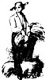

There are moments in all of our lives when we're burdened by the suspicion that perhaps in the real world at least-it's thedishonest people who are rewarded . . . while men and women who try to do the best work that they can while helping their neighbors and their planet are presented with one obstacle after another. Well, if such feelings have been getting you down lately, you might care to read the opinion of one of humankind's great thinkers . . . in this excerpt from a classic essay.
Ever since I was a boy I have wished to write a discourse on Compensation; for it seemed to me, when very young, that on this subject life was ahead of theology, and the people knew more than the preachers taught ....
I was lately confirmed in these desires by hearing a sermon at church. The preacher, a man esteemed for his orthodoxy, unfolded in the ordinary manner the doctrine of the Last Judgment. He assumed that judgment is not executed in this world; that the wicked are successful; that the good are miserable; and then urged from reason and from Scripture a compensation to be made to both parties in the next life. No offence appeared to be taken by the congregation at this doctrine. As far as I could observe, when the meeting broke up, they separated without remark on the sermon.
Yet what was the import of this teaching? What did the preacher mean by saying that the good are miserable in the present life? Was it that houses and lands, offices, wine, horses, dress, luxury are had by unprincipled men, whilst the saints are poor and despised; and that a compensation is to be made to these last hereafter, by giving them the like gratification another day-bank stock and doubloons, venison and champagne? This must be the compensation intended; for what else? Is it that they are to have leave to pray and praise? to love and serve men? Why, that they can do now. The legitimate inference the disciple would draw was-"We are to have such a good time as the sinners have now"-or, to push it to its extreme import "You sin now, we shall sin by and by; we would sin now, if we could; not being successful, we expect our revenge tomorrow" . . . .
But men are better than this theology. Their daily life gives it the lie. Every ingenuous and aspiring soul leaves the doctrine behind him in his own experience; and all men feel sometimes the falsehood which they cannot demonstrate ....
I shall attempt to record some facts that indicate the path of the law of Compensation; happy beyond my expectation, if I shall truly draw the smallest arc of this circle ....
Human labour, through all its forms, from the sharpening of a stake to the construction of a city or an epic, is one immense illustration of the perfect compensation of the universe. The absolute balance of Give and Take, the doctrine that everything has its price-and if that price is not paid, not that thing but something else is obtained, and that it is impossible to get anything without its price-is not less sublime in the columns of a ledger than in the budgets of states, in the laws of light and darkness, in all the action and reaction of nature. I cannot doubt that the high laws which each man sees implicated in those processes with which he is conversant, the stern ethics which sparkle on his chisel edge, which are measured out by his plumb and foot rule, which stand as manifest in the footing of the shop bill as in the history of a state, do recommend to him his trade and, though seldom named, exalt his business to his imagination.
The league between virtue and nature engages all things to assume a hostile front to vice. The beautiful laws and substances of the world persecute and whip the traitor. He finds that things are arranged for truth and benefit, but there is no den in the wide world to hide a rogue. Commit a crime, and the earth is made of glass. Commit a crime, and it seems as if a coat of snow fell on the ground, such as reveals in the woods the track of every partridge and fox and squirrel and mole. You cannot recall the spoken word, you cannot wipe out the foot track, you cannot draw up the ladder so as to leave no inlet or clew. Some damning circumstance always transpires. The laws and substances of nature-water, snow, wind, gravitation-become penalties to the thief.
On the other hand, the law holds with equal sureness for all right action. Love, and you shall be loved. All love is mathematically just, as much as the two sides of an algebraic equation. The good man has absolute good, which like fire turns everything to its own nature, so that you cannot do him any harm; but as the royal armies sent against Napoleon, when he approached, cast down their colours and from enemies became friends, so disasters of all kinds, as sickness, offence, poverty, prove benefactors:
Winds blow and waters roll
Strength to the brave, and power and deity,
Yet in themselves are nothing.
[Wordsworth]
The good are befriended even by weakness and defect. As no man had ever a point of pride that was not injurious to him, so no man had ever a defect that was not somewhere made useful to him. The stag in the fable admired his horns and blamed his feet, but when the hunter came, his feet saved him, and after wards, caught in the thicket, his horns destroyed him. Every man in his lifetime needs to thank his faults. As no man thoroughly understands a truth until he has contended against it, so no man hits a thorough acquaintance with the hindrances or talents of men until he has suffered from the one and seen the triumph of the other over his own want of the same. Has he a defect of temper that unfits him to live in society? Thereby he is driven to entertain himself alone and acquire habits of self-help; and thus, like the wounded oyster, he mends his shell with pearl.
Our strength grows out of our weakness. The indignation which arms itself with secret forces does not awaken until we are pricked and stung and sorely assailed. A great man is always willing to be little. Whilst he sits on the cushion of advantages, he goes to sleep. When he is pushed, tormented, defeated, he has a chance to learn something; he has been put on his wits, on his manhood; he has gained facts; learns his ignorance; is cured of the insanity of conceit; has got moderation and real skill. The wise man throws himself on the side of his assailants. It is more his interest than it is theirs to find his weak point. The wound cicatrises and falls off from him like a dead skin, and when they would triumph, lo! he has passed on invulnerable. Blame is safer than praise. I hate to be defended in a newspaper. As long as all that is said is said against me, I feel a certain assurance of success. But as soon as honeyed words of praise are spoken for me, I feel as one that lies unprotected before his enemies. In general, every evil to which we do not succumb is a benefactor. As the Sandwich Islander believes that the strength and valour of the enemy he kills passes into himself, so we gain the strength of the temptation we resist.
The same guards which protect us from disaster, defect, and enmity defend us, if we will, from selfishness and fraud. Bolts and bars are not the best of our institutions, nor is shrewdness in trade a mark of wisdom. Men suffer all their life long, under the foolish superstition that they can be cheated. But it is as impossible for a man to be cheated by any one but himself as for a thing to be and not to be at the same time. There is a third silent party to all our bargains. The nature and soul of things takes on itself the guaranty of the fulfilment of every contract, so that honest service cannot come to loss if you serve an ungrateful master, serve him the more. Put God in your debt. Every stroke shall be repaid. The longer the payment is withholden, the better for you; for compound interest on compound interest is the rate and usage of this exchequer.
HUMAN LABOUR, through all its forms, from the sharpening of a stake to the construction of a city or an epic is one immense illuistration of the perfect Compensation of the universe
The history of persecution is a history of endeavours to cheat nature, to make water run up hill, to twist a rope of sand. It makes no difference whether the actors be many or one, a tyrant or a mob. A mob is a society of bodies voluntarily bereaving themselves of reason, and traversing its work. The mob is man voluntarily descending to the nature of the beast. Its fit hour of activity is night. Its actions are insane like its whole constitution. It persecutes a principle; it would whip a right; it would tar and feather justice, by inflicting fire and outrage upon the houses and persons of those who have these. It resembles the prank of boys, who run with fire engines to put out the ruddy aurora streaming to the stars. The inviolate spirit turns their spite against the wrongdoers. The martyr cannot be dishonoured. Every lash inflicted is a tongue of fame; every prison, a more illustrious abode; every burned book or house enlightens the world; every suppressed or expunged word reverberates through the earth from side to side. Hours of sanity and consideration are always arriving to communities, as to individuals, when the truth is seen, and the martyrs are justified.
Thus do all things preach the indifferency of circumstances. The man is all. Everything has two sides, a good and an evil. Every advantage has its tax. I learn to be content. But the doctrine of compensation is not the doctrine of indifferency. The thoughtless say, on hearing these representations, What boots it to do well? There is one event to good and evil; if I gain any good, I must pay for it; if I lose any good, I gain some other; all actions are indifferent.
There is a deeper fact in the soul than compensation, to wit, its own nature. The soul is not a compensation, but a life. The soul is. Under all this running sea of circumstance, whose waters ebb and flow with perfect balance, lies the aboriginal abyss of real Being. Essence, or God, is not a relation, or a part, but the whole. Being is the vast affirmative, excluding negation, selfbalanced, and swallowing up all relations, parts, and times within itself. Nature, truth, virtue are the influx from thence. Vice is the absence or departure of the same. Nothing, Falsehood, may indeed stand as the great Night or shade, on which, as a background, the living universe paints itself forth; but no fact is begotten by it; it cannot work, for it is not. It cannot work any good; it cannot work any harm. It is harm inasmuch as it is worse not to be than to be.
We feel defrauded of the retribution due to evil acts, because the criminal adheres to his vice and contumacy, and does not come to a crisis or judgment anywhere in visible nature. There is no stunning confutation of his nonsense before men and angels. Has he therefore outwitted the law? In as much as he carries the malignity and the lie with him, he so far deceases from nature. In some manner there will be a demonstration of the wrong to the understanding also; but should we not see it, this deadly deduction makes square the eternal account.
Neither can it be said, on the other hand, that the gain of rectitude must be bought by any loss. There is no penalty to virtue; no penalty to wisdom; they are proper additions of being. In a virtuous action, I properly am; in a virtuous act, I add to the world; I plant into deserts conquered from Chaos and Nothing, and see the darkness receding on the limits of the horizon. There can be no excess to love; none to knowledge; none to beauty, when these attributes are considered in the purest sense. The soul refuses limits, and always affirms an Optimism, never a Pessimism.
Man's life is a progress, and not a station. His instinct is trust. Our instinct uses "more" and "less" in application to man, of the presence of the soul, and not of its absence; the brave man is greater than the coward; the true, the benevolent, the wise is more a man, and not less, than the fool and knave. There is no tax on the good of virtue; for that is the incoming of God himself, or absolute existence, without any comparative. Material good has its tax, and if it came without desert or sweat, has no root in me, and the next wind will blow it away. But all the good of nature is the soul's, and may be had, if paid for in nature's lawful coin, that is, by labour which the heart and the head allow. I no longer wish to meet a good I do not earn, for example, to find a pot of buried gold, knowing that it brings with it new burdens. I do not wish more external goodsneither possessions, nor honours, nor powers, nor persons. The gain is apparent; the tax is certain. But there is no tax on the knowledge that the compensation exists, and that it is not desirable to dig up treasure. Herein I rejoice with a serene eternal peace. I contract the boundaries of possible mischief. I learn the wisdom of St. Bernard-"Nothing can work me. damage except myself; the harm that I sus tain I carry about with me, and never am a real sufferer but by my own fault."
In the nature of the soul is the compensation for the inequalities of condition. The radical tragedy of nature seems to be the distinction of More and Less. How can Less not feel the pain; how not feel indignation or malevolence towards More? Look at those who have less faculty, and one feels sad, and knows not well what to make of it. He almost shuns their eye; he fears they will upbraid God. What should they do? It seems a great injustice. But see the facts nearly, and these mountainous inequalities vanish. Love reduces them, as the sun melts the iceberg in the sea. The heart and soul of all men being one, this bitterness of His and Mine ceases. His is mine. I am my brother, and my brother is me. If I feel overshadowed and outdone by great neighbours, I can yet love; I can still receive; and he that loveth maketh his own the grandeur he loves. Thereby I make the discovery that my brother is my guardian, acting for me with the friendliest designs, and the estate I so admired and envied is my own. It is the nature of the soul to appropriate all things. Jesus and Shakspeare are fragments of the soul, and by love I conquer and incorporate them in my own conscious domain. His virtueis snot that mine? His wit-if it cannot be made mine, it is not wit ....
The compensations of calamity are made apparent to the understanding also, after long intervals of time. A fever, a mutilation, a cruel disappointment, a loss of wealth, a loss of friends seems at the moment unpaid loss, and unpayable. But the sure years reveal the deep remedial force that underlies all facts. The death of a dear friend, wife, brother, lover, which seemed nothing but privation, somewhat later assumes the aspect of a guide or genius; for it commonly operates revolutions in our way of life, terminates an epoch of infancy or of youth which was waiting to be closed, breaks up a wonted occupation, or a household, or style of living, and allows the formation of new ones more friendly to the growth of character. It permits or constrains the formation of new acquaintances and the reception of new influences that prove of the first importance to the next years; and the man or woman who would have remained a sunny garden flower, with no room for its roots and too much sunshine for its head, by the falling of the walls and the neglect of the gardener is made the banyan of the forest, yielding shade and fruit to wide neighbourhoods of men.
|
 |
|
|